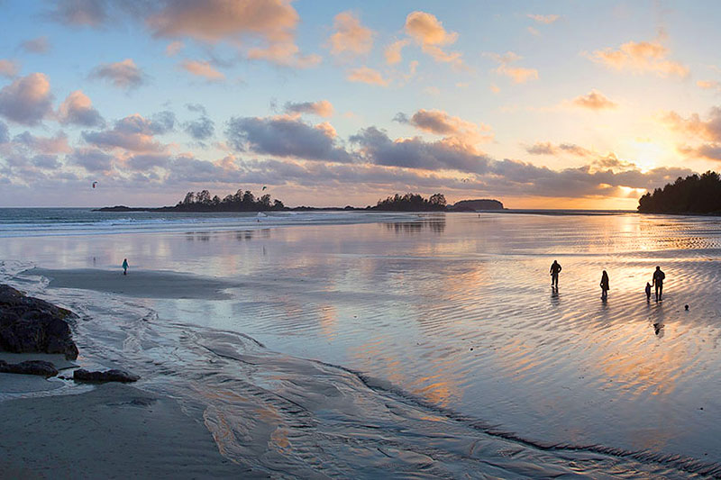

You can also hike along the coast and take in the views of the coast and listen to waves crashing against the rocks that
edge the innumerable crevices that line the coast.

Chesterman beach, one of many beautiful beaches in Tofino, BC.
Once you've spent some time at the beach, you can have some fun at Cultus Lake Waterpark,
one of the biggest waterparks in Western Canada. And if you still feel restless, you
can go visit some nearby wineries, as well as hike or mountain bike on the many trails
that are just a few minutes' drive away.
Beautiful beachside view of the lake in Cultus Lake, BC
The HTML
<progress> element represents the completion
progress of a task, typically displayed as a progress bar.
max
This attribute describes how much work the task indicated by the progress element requires.
The max attribute, if present, must have a value greater than zero and be a valid
floating point number. The default value is 1.
value
This attribute specifies how much of the task that has been completed. It must be a valid
floating point number between 0 and max, or between 0 and 1 if max is omitted. If
there is no value attribute, the progress bar is indeterminate; this indicates that
an activity is ongoing with no indication of how long it is expected to take.
The HTML
<mark> element represents highlighted text, i.e.,
a run of text marked for reference purpose, due to its relevance in a particular
context. For example it can be used in a page showing search results to highlight
every instance of the searched-for word.